2..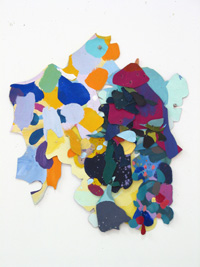
3..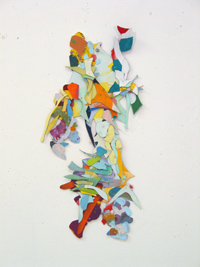
2..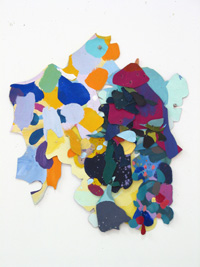
3..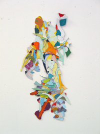
1.. "Queen Bee," 2003. Acrylic and paper on canvas, 25 x 12"
2.. "Kisses Flowrs Grapes," 2004. Acrylic on canvas, 22 x 20.5"
3.. "A Fragment of the Bride," 2004. Acrylic on canvas, 22 x 12"
by Samia A. Halaby
1..
2..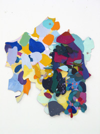
3..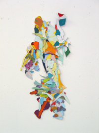
1.. "Queen Bee," 2003. Acrylic and paper on canvas, 25 x 12"
2.. "Kisses Flowrs Grapes," 2004. Acrylic on canvas, 22 x 20.5"
3.. "A Fragment of the Bride," 2004. Acrylic on canvas, 22 x 12"
4..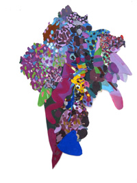
5..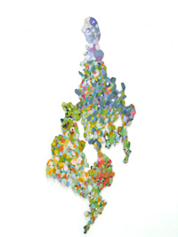
6..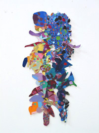
4.. "Purples Grapes," 2003. Acrylic and paper on canvas, 25 x 17.5"
5.. "Old Bride," 2003. Acrylic canvas, 22 x 14.5"
6.. "Standing Blue Pair," 2003. Acrylic and paper on canvas, 26 x 13.5"
7..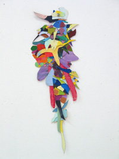
8..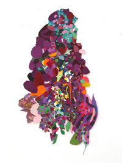
9..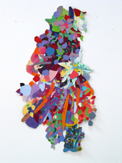
7.. "Bird in Paradise," 2003. Acrylic and paper on canvas, 22.5 x 8"
8.. "Women and Flowers," 2003. Acrylic and paper on canvas, 33.5 x 17.75"
9.. "Village Dance: The Woman," 2003. Acrylic on canvas, 33 x 19"
10..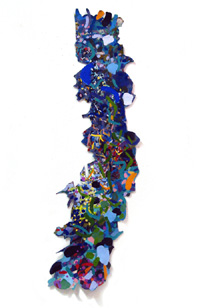
11..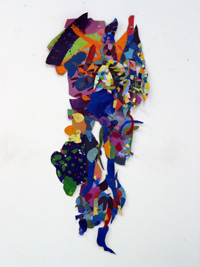
12..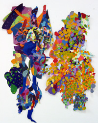
10.. "Return of the Stolen Olive Tree," 2003. Acrylic and paper on canvas, 60 x 17.5"
11.. "Village Dance: The Man," 2003. Acrylic and paper on canvas, 33 x 18"
12.. "Village Dance: Man and Woman," 2003. Acrylic on canvas.
="pointer-events:none;cursor:default;" href="http://www.art.net/">
![[Art on the Net]](/images/artnet_button.gif)